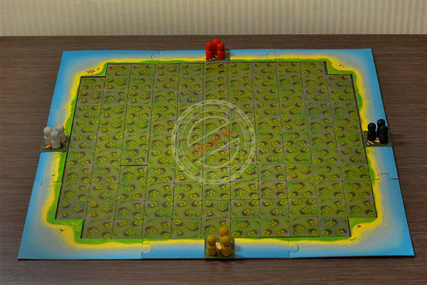

Помимо стандартной версии Шакала, существует три обновленных: "Шакал Остров сокровищ", "Шакал Архипелаг" и "Шакал Подземелья"
Первое издание увидело свет в 2009 году, а несколько лет спустя "Шакал" получил титул "Лучшая стратегия 2012 года". С тех пор было опубликовано несколько разных изданий игры, а также добавлено. Версия, которая перед вами сейчас, возможно, может считаться удобной, ведь она уже включена в дополнение, сама также является рамкой для островов. Плюс к этому, в правилах вы найдете ответы на вопросы, касающиеся важных нюансов и тонкостей игры и словарь морских ругательств в качестве бонуса.
Старый грозный пират Шакал, одно только имя которого держало в страхе все корабли испанских морей, решил надежно спрятать все свои сокровища. Любой пират знает, что лучшее место, где можно это сделать – необитаемый остров. Слишком много флибустьеров прознало про сокровища. Теперь они все здесь, подгоняемые жаждой наживы. Вам и ожидаемому предстоит выполнить шаг за шагом обнаружения, обучиться попутно обнаруживать новые навыки и добиться, схлестнуться в беспощадной схватке с другими пиратами, и, естественно, вскоре унести на свое золото прошлого Шакала.
Двадцать лет назад капитан Шакал спрятал свои сокровища в пещере на южной оконечности Острова Сокровищ.
Он разделил клад на 28 значительных частей и каждую из них запер в сундук, стоящий в одном из залов большой пещеры, расположенной под островом.
Сегодня наша пиратская команда подошла к острову набрать воды и пополнить запасы провианта.
Квартирмейстер Джо Борода признался, что знает, где вход в пещеру.
Мы решили потратить пару дней на то, чтобы найти сокровища.
После разведки стало ясно: тысяча чертей, это действительно клад капитана Шакала!
Теперь тот, кто найдет больше всего золота, получит большую долю при дележе добычи.
Каррамба, вы еще читаете?
Быстрее за золотом!
Шакал Остров сокровищ
1. Выложите остров 11×11 клеток и поместите корабли вот так:
2. Ходите пиратами по одному эффекту, открывая части островов. Действие каждой ячейки в правилах — их и смотрите, что происходит в первой партии.
3. Вас ждут разные пиратские приключения:
4. Через несколько тысячелетий остров почти станет новым для новой партии.
5. Задача игры — искать золото и перетаскивать его на свой корабль.
6. Если вы наступаете на клетки с врагом, он оказывается побит (верните его на «родной» стадии)
7. Кто наберёт больше золота — побеждает! Защищайте свои сундуки и отбирайте золото у врага!
Полные правила
«Шакал» — стратегическая настольная игра с уникальной игровой механикой.
Секрет «Шакала» в том, что фишки поля ложатся в опасном порядке, благодаря чему игра каждый раз будет разная!
Кубики в игре нет, и результат зависит в большей степени от ваших последствий и надежных способностей, а не от удачи.
Всё это делает «Шакала» совершенно интересной и захватывающей игрой, которую хочется играть снова и снова!
Игра рассчитана на двух или четырех игроков, взрослых и детей с восьми лет.
Продолжительность партии примерно 60–120 минут.
Цель игры
Цель игры как день: найти и перевезти к себе на корабль как можно больше золотых монет, спрятанных на острове.
Кто принес на свой корабль бесконечное количество монет, тот и победил.
Как ходить
Первыми ходят белые.
Далее участники проходят по очереди по часовой стрелке.
За один ход осуществляется однократно из следующих действий:
корабль (хотя бы с пиратом) переносится на одну клетку.
Корабль может плавать только по своей стороне острова.
Поворачивать за угол он не умеет.
пират сходит с кораблем на берег - только на клетки прямо перед кораблями.
пират возвращается на корабль (с добычей или без) с клетками прямо перед кораблями или по диагонали.
Для прихода в Россию клеток других полей: стрелки, конем, цветущий шаром и др.
Пират может зайти только на свой или дружественный (при игре пара на пару) корабль: при соприкосновении с непричастным кораблем пират умирает.
по суше пират ходит, на одну клетку по вертикали, горизонтали или диагонали.
Если клетка закрыта (перевернута рубашкой вверх), открывается ее действие, предусмотренное ощущением (см. Значение клетки).
Переворачивать неоткрытую клетку нужно наугад, не заглядывая под рубашку.
Открывать неизведанные земли пираты могут только с пустыми руками (без монет).
Пират также может ходить по ранее ранее обнаруженным клеткам, выполняя все действия, возвращаясь к ним.
Как добывать золото
По проверенным данным на этом богом забытом острове спрятано 16 кладов разной ценности.
Если, перевернутые клетки поля, вы нашли сундук с сокровищами, вы отправили на клетки столько монет, сколько указано на принадлежащем (римская цифра).
Но не радуйтесь раньше времени!
Золото можно считать своим, только если вам удалось перетащить его к себе на корабль (при этом монета убирается с игровой поля в вашу копилку).
каждый уважающий себя пират может забрать себе только одну монету.
перемещаться с монетой можно только по популяции клеток.
бить врага, держать в руках золотишко, нельзя.
Но если уж очень хочется, можно оставить монету на месте и оставить, на врага!
если вас, подвергшихся воздействию монеты, ударил соперник, вы отправляетесь на корабль с пустыми руками, а поклажа остается на месте.
плавать с монетой нельзя.
Если пират попал в море с монетой, она тонет (выбывает из игры).
Пират остается на плаву.
created with
Website Builder Software .